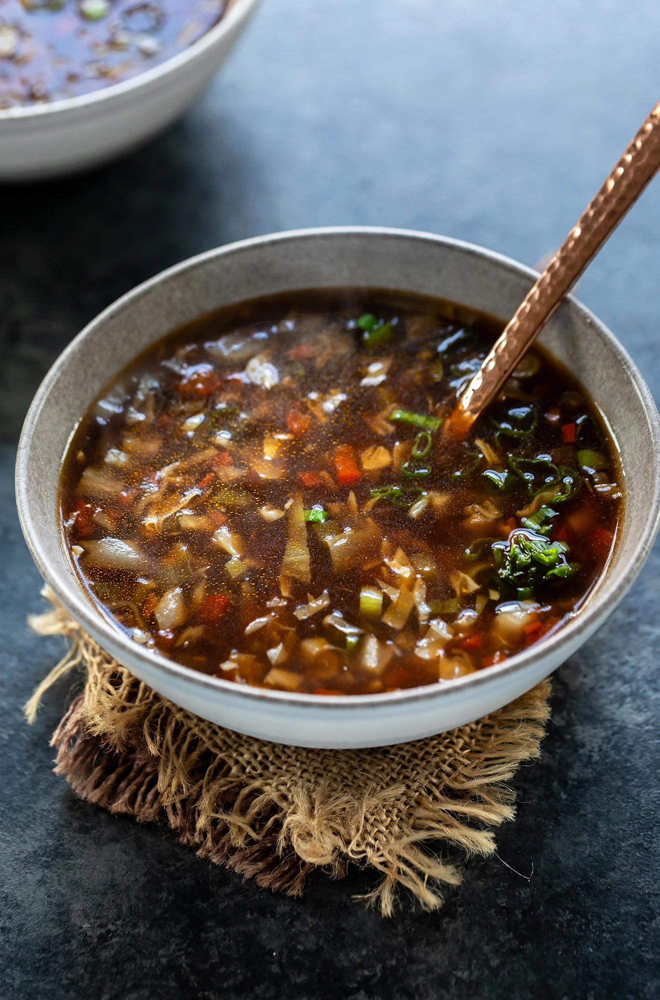

Soup
Prep: 30 mins
Difficulty: Medium
Serves: 4

Ingredients
- 6 large ripe tomatoes, chopped
- 1 medium onion, chopped
- 3 cloves garlic, minced
- 2 tablespoons olive oil
- 2 cups vegetable stock
- 1 teaspoon sugar
- ½ teaspoon dried basil
- Salt and black pepper to taste
- Fresh cream and basil leaves to garnish
Instructions
- Heat olive oil in a large pot over medium heat. Add the onion and cook for 5 minutes until softened.
- Add the garlic and cook for another minute until fragrant.
- Add the chopped tomatoes, sugar, and dried basil. Stir well and cook for 10 minutes, stirring occasionally.
- Pour in the vegetable stock and bring to a boil. Reduce heat and simmer for 15 minutes.
- Remove from heat and blend the soup using a hand blender (or carefully in a blender in batches) until smooth.
- Season with salt and pepper. Serve hot with a swirl of cream and fresh basil on top.
Back to Home